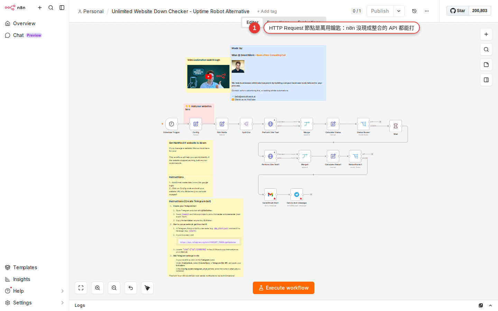

The HTTP Request node: reach every API without an official integration
In Chapter 11 you wired up Slack, Gmail and Google Sheets — popular SaaS products that all ship a ready-made node, so you fill in a few fields and they work. But the world holds more than those few. The CRM you have to connect at work, a regional accounting system, or an IoT vendor's API — n8n may have no ready-made node for them. This chapter hands you n8n's master key, the HTTP Request node. If the other side has a REST API, you can reach it.
Why you need this node
At the source snapshot, n8n listed 400+ integrations, covering many well-known SaaS products; check the live catalog because the count changes. But pull the camera back — the world holds a few hundred thousand services with an API:
- Internal systems your company self-hosts (ticketing, inventory and ordering, CRM) — n8n was never going to build those
- Regional SaaS (a local accounting product, logistics service, or invoicing API) — sometimes too niche for an official node
- Services that just launched — n8n has not had time to build a node yet
- Things everyone uses that n8n happens not to cover (some obscure CI/CD tool, say)
- Services you wrote yourself, and your department's internal microservices
As long as it has a REST API (the kind where you call a URL and JSON comes back), you can reach it with the HTTP Request node. This node holds the same place as the Code node: it is n8n's escape hatch, and anything the ready-made nodes cannot do, you can put together here.
The chapter in one line: when you find that n8n has no node for a service, do not panic — read their API docs, open an HTTP Request node, fill in four fields, and you are through. Note: the English edition uses globally applicable regional-service examples; verify the API, authentication, and legal requirements for your own market.
The four parts of an HTTP call
Whichever API you are calling, one HTTP call always means deciding four things. Skip this if you already know HTTP; if you do not, three minutes here pays off for good —
| Part | What it asks you | Typical value |
|---|---|---|
| URL | Where do you send it? | https://api.example.com/users |
| Method | What action do you want? | GET, POST, PUT, DELETE, PATCH |
| Headers | What information comes along? | Authorization: Bearer xxx, Content-Type: application/json |
| Body | What data are you sending? | A JSON payload (only POST/PUT/PATCH need one) |
Method is really just a verb: it says what you want to do to that URL —
GET: fetch — read a piece of data without changing anything (example: pull the customer list)POST: create — add a new record (example: create a new user)PUT: replace the whole record — overwrite the existing one with the body you sendPATCH: partial update — change a few fields and keep the restDELETE: delete — the record is gone (example: delete that user)
POST /users) is telling you which method that endpoint takes. Doc tables usually have three columns: Method + path + description.Headers carry information along with the call. The two you meet most:
Authorization: Bearer <your-token>— proves who you areContent-Type: application/json— tells the other side "I am sending JSON"
Body is only filled in for POST, PUT and PATCH — it is the data you are sending over, usually a lump of JSON. GET and DELETE carry no body (a few APIs are exceptions, but not many).
Three things to look for in API docs
When you open the docs for an API you have never used — Stripe, Notion, or your company's internal system — there are three things to find. Everything else is trimming:
-
Endpoint URL (where to send it)
A sidebar or a table in the docs usually lists every address you can call, for example
https://api.example.com/v1/users,https://api.example.com/v1/orders/{id}. Braces like{id}in an address mean you replace that part with a real value. -
Method (which verb to use)
Every endpoint is labeled
GET,POST,PUTorDELETE— that is the method the endpoint takes. The same URL sometimes supports several methods (GET /usersreturns the list,POST /userscreates a new one), so read carefully and do not mix them up. -
Auth (how you authenticate)
There is always an Authentication section near the front telling you which scheme they use. Three are common: a Bearer token in a header (most modern APIs),
?api_key=xxxon the end of the URL (the older style), and a full OAuth round trip (Google, Facebook and the like). Work out which one it is and you know what to fill in.
curl example, such as curl -H "Authorization: Bearer xxx" https://api.example.com/users. Read that one line and you know where the URL, the method (no -X means GET) and the headers are. If you can read curl, you can use the HTTP Request node.Docs look different from vendor to vendor, but those three are always written down somewhere. If you cannot find them, the docs are bad, or you need to go ask their support.
Hands-on: call your first API (public GitHub data)
Start with a public API that needs no auth, just to get used to the node. The goal: fetch the public data for the GitHub user octocat (their octopus-cat mascot).

-
Add an HTTP Request node to the canvas
Press + on an empty part of the canvas to open the nodes panel, search for
httpand pick HTTP Request. It lands on your workflow with connector dots on both sides (the same as an Action node). If there is no Trigger node in front of it, add a Manual Trigger (so you can run it by hand) and wire the two together. -
Set Method to GET
Open the node's panel on the right and set the Method dropdown at the top to
GET(GET is the default, so usually there is nothing to change). -
Put
https://api.github.com/users/octocatin URLPaste that address into the URL field below. It is GitHub's own public REST API for reading one user's data.
-
Leave Authentication on
NonePublic data needs no auth. In real work you will usually pick
Generic Credential TypeorPredefined Credential Type; both come later in this chapter, so skip them on your first run. -
Press
Execute stepThe Execute step button sits at the top right of the node (some versions call it Test step). Press it and n8n really does call the API.
-
Read the JSON in the output pane on the right
Within seconds the octocat's data appears on the right —
login: "octocat",id: 583231,name: "The Octocat",avatar_url: "...",public_repos: 8— one whole block of JSON. That means your API call worked. -
The next node can read fields with
{{ $json.login }}Wire a Slack or Set node after this HTTP Request and type
User {{ $json.login }} has {{ $json.public_repos }} reposinto the message field; at run time it is replaced with the real values. That is an expression, and Chapter 14 is devoted to it.
Three common ways to authenticate
Public APIs are the minority; in practice most of them want auth. Here are the styles you will run into:
| Method | How to write it | Common with |
|---|---|---|
| Bearer Token | Add Authorization: Bearer <token> to the headers |
OpenAI, Anthropic, Notion, most modern APIs |
| API Key in Query | Add ?api_key=xxx or ?key=xxx to the URL |
Google Maps, OpenWeatherMap, some older APIs |
| Basic Auth | Add Authorization: Basic <base64(user:pass)> to the headers |
Jira, some self-hosted systems, internal tools |
| API Key in Header | Add a custom header field such as X-API-Key: xxx |
Stripe (the old one), some enterprise APIs |
| OAuth 2.0 | Run an authorization round trip to get a token (refreshed automatically) | Google, Slack, Facebook (these usually have a dedicated node) |
The Authentication dropdown inside the node has a few options:
None— public APIs need no authPredefined Credential Type— n8n has these set up for you, so just pick the matching service (OpenAI,NotionorHubSpot, for example)Generic Credential Type— you name the scheme yourself, and the dropdown offers seven:Basic Auth,Custom Auth,Digest Auth,Header Auth,OAuth1 API,OAuth2 API,Query Auth(some versions also haveSimplified Custom Auth)
Generic Credential Type, then Header Auth, and n8n asks you to create a credential — a Name (say Authorization) and a Value (say Bearer sk-xxxxx). Once it is saved, any node can reference that credential and you never paste the token around. Chapter 13 is devoted to managing credentials.Hands-on: POST JSON to an API
GET fetches, POST sends. In practice you reach for POST whenever you want n8n to create a record in another SaaS. Say a messaging API's endpoint is POST /messages and the body has to be {"text": "message body", "to": "user@example.com"} — here are the steps:
-
Change Method to
POSTSet the Method dropdown at the top of the right-hand panel to
POST. Once POST is selected, a Send Body option appears below it. -
Put the endpoint in URL
For example
https://api.example.com/v1/messages. Their docs always give you this. -
Set up Authentication
Pick whatever they require — usually
Generic Credential Type→Header Auth, holding oneAuthorization: Bearer <your-token>pair. -
Turn on Send Body
If you are sending a body, switch Send Body on.
-
Set Body Content Type to
JSONA Body Content Type menu appears, and n8n offers five options:
JSON,Form URLencoded,Form-Data,n8n Binary File,Raw. Most modern APIs takeJSON; a file-upload form takesForm-Data; raw binary (a PDF sent straight through, say) takesn8n Binary File; XML or a custom MIME type takesRaw. Pick whatever their docs say. -
Set Specify Body to
Using JSONand paste the payloadA large text box appears. Paste this in:
{ "text": "{{ $json.message }}", "to": "user@example.com" }The
{{ $json.message }}in there is an expression; it reads themessagefield from the previous node. Hard-coding is fine too — just type"hello". -
Execute step and read the response
Press run. Their API's response appears in the output pane on the right — usually a confirmation like
{"id": "msg_xxx", "status": "sent"}. If{"error": "..."}comes back instead, see thetroubleshootsection.
{{ JSON.stringify($json) }} sends the entire item as the body. Watch the quote escaping against the surrounding double quotes.Common API patterns at a glance
Almost every REST API looks alike — the four CRUD operations (Create, Read, Update, Delete) map onto four methods. Recognize the pattern and their docs go much faster:
| What you want to do | Method + URL convention | Body needed |
|---|---|---|
| Pull a list of records | GET /items?limit=100 |
No |
| Pull a single record | GET /items/{id} |
No |
| Create a record | POST /items |
Yes (JSON for the new record) |
| Replace a whole record | PUT /items/{id} |
Yes (the complete new content) |
| Update part of a record | PATCH /items/{id} |
Yes (only the fields you are changing) |
| Delete a record | DELETE /items/{id} |
No |
| Query with filters | GET /items?status=active&created_after=2026-08-01 |
No (the filters live in the query string) |
Query parameters (the ?a=1&b=2 part after the question mark) do not have to be typed by hand in the HTTP Request node. Switch on Send Query Parameters and fill in one Name/Value pair per row. n8n assembles the correct URL for you, URL encoding included (Chinese characters and spaces are escaped automatically).
{id}, write https://api.example.com/items/{{ $json.id }} straight into the node's URL field — n8n replaces the expression with the actual value at run time. This is one of the most common things you will do.Handling pagination
Most APIs will not return everything at once — they cap one response at 100 records (some at 50, some at 25). To pull 500 customers you have to call five times in a row, one page each. That is pagination.
The good news: the n8n HTTP Request node has pagination built in, so you do not write the loop yourself. The steps:
-
Open the node's
PaginationtabScroll down the node's right-hand panel to the Pagination block and change Pagination Mode from
Offto the mode you want. -
Pick the mode — follow their API docs
Two are common:
- Response Contains Next URL — the JSON the API returns holds a
nextornext_urlfield, and n8n follows it automatically - Update a Parameter in Each Request — you tell n8n which query parameter to change each time (
page=1, 2, 3...orcursor=xxx, for example)
- Response Contains Next URL — the JSON the API returns holds a
-
Set
Complete Expression(when to stop)n8n decides whether to stop with a boolean expression — the field is called Complete Expression. Fill in something like
{{ $response.body.results.length === 0 }}(stop when an empty array comes back) or{{ !$response.body.next_page }}(stop when there is no next page). You can also set Limit Pages Fetched as a safety cap on the number of pages (20 at most, say). -
Run it and look at the output
n8n makes the calls back to back and merges every page into one output. The next node sees the full 500 records and never has to care about pagination.
The official pagination docs are thorough, with an example for every pattern: docs.n8n.io/code/cookbook/http-node/pagination.
Create a credential for the HTTP Request node
If you keep using the same API key against several endpoints at the same SaaS (GET the customer list, POST a message to each customer, DELETE the expired ones), do not paste the token into every node. Store the token as a credential and share it across nodes instead.
-
Left sidebar
Credentials→Create CredentialPick Credentials in the main sidebar on the left, then press Create Credential at the top right (or the guided button you get the first time).
-
Search for
Header AuthSearch the credential type list for
headerand pick Header Auth (older interfaces show it asHTTP Header Auth— same thing). It is the most general one: Bearer tokens and X-API-Key both go through it. -
Put
Authorizationin Name andBearer <your-token>in ValueName is the header field's name, Value is its value. Save the pair and give the credential a name you will recognize, such as
MyCompany CRM Bearer. -
Back in the node, set Authentication to
Generic Credential Type→Header Auth→ the credential you just madeFrom then on every request this node makes carries that header automatically. Point several nodes at the same credential and changing the token is a one-place edit.
The node's other common options, in one pass
An Add Option button at the bottom of the node opens more advanced settings. You will meet these sooner or later:
| Option | What it does | When you need it |
|---|---|---|
Response > Response Format |
Sets how the response is parsed; the options are Autodetect (the default), JSON, Text, File |
Pick File when you download a PDF, an image or a CSV; pick Text when they return a plain string |
Response > Full Response |
The output carries the headers and status code as well as the body | When you need to see the HTTP status code or the response headers |
Response > Never Error |
The node stays out of the red even when the API returns 4xx/5xx | When you want to read the status code yourself and branch on it |
Timeout |
The longest time in milliseconds to wait for a response (leave it empty and n8n's built-in default applies, usually 300000 ms) | Their API is slow or flaky, or you want to fail fast |
Batching |
Call once every N items, and how many milliseconds to wait between calls | 500 items arrive in your workflow and each one needs its own API call — this is where you set the rate limit |
Redirects |
Whether 3xx redirects are followed automatically | Their API uses shortened URLs, or it redirects to a sign-in page |
Proxy |
Send the call through an HTTP proxy | Your corporate network only reaches outside APIs through a proxy |
Common errors and fixes
When a call does not get through, the error message is usually an HTTP status code. Knowing a handful of them saves a lot of time:
-
401 Unauthorized (no auth, or the wrong token)
Auth is set up wrong, or the token expired. Get one successful call through Postman, Insomnia or
curlfirst, then come back and compare — copy the curl that works, and fill the node's Method, URL and Header to match it field by field. That isolates the problem (an n8n setting, or the token/URL). -
403 Forbidden (signed in, but not allowed)
The token is right, but you have no permission for this endpoint. Read the scope or role section of their API docs — a specific permission usually has to be granted (OpenAI wants a read or write scope, Slack wants
chat:write). Issue a new token with the right permissions. -
404 Not Found (wrong URL, or the record does not exist)
A typo in the URL, a missing
/v1/, or a wrong{id}in the path (that record does not exist). Compare it against the URL in the docs carefully; building a URL with an expression makes an extra or missing slash especially easy. -
429 Too Many Requests (you are calling too fast)
Their API has a rate limit (60 calls a minute, say) and you went over it. Three fixes: (1) set an interval in the node's
Options → Batching; (2) put a Wait node in front to slow it down; (3) turn onRetry on FailwithRetry Waiton the node (Chapter 17 covers it in detail). -
500 / 502 / 503 (their server fell over)
Not your problem — their API is down. Turning on
Retry on Fail(three retries, five seconds apart) usually gets you through. A 500 that keeps coming means they really are broken; search twitter for their status page. -
200, but HTML comes back instead of JSON
Your URL is wrong — a 302 has probably redirected you to a sign-in page or an error page. Check whether the output is a pile of
<html>and<body>tags. Compare the URL carefully, confirm auth is set up, and confirm the API base URL is right. Sometimeshttpsvshttpis enough to trigger the redirect. -
It succeeds, but the body is empty
Check whether the status code is
204 No Content— that means "it worked, there is nothing to return", which is normal.DELETEoften returns 204. Or the API is simply designed that way (no body on success). To tell whether it worked, switch onOptions → Response → Full Responseand judge by the status code. -
SSL certificate errors
Internal company APIs often use a self-signed SSL certificate. Turning on
Options → Add Option → Ignore SSL Issues (Insecure)in the node skips verification. Do this for internal services only — never switch off SSL verification against a public API, because it opens you to a man-in-the-middle attack.
Authorization: Bearer in a header.FAQ
Which is better, the HTTP Request node or an official SaaS node?
If there is an official node, use it. Official nodes wrap up three things for you: (1) auth runs OAuth on your behalf (no pasting tokens), (2) pagination is handled automatically, (3) the common operations have a UI (no looking up API endpoints). HTTP Request is the escape hatch for when there is no official node. Forcing HTTP Request onto Slack or Gmail, which already have nodes, costs you a lot of extra time.
I have a curl command in front of me. How do I turn it into an n8n node?
Three ways: (1) Use Postman — paste the curl into Postman's Import and it splits into Method, URL, Header and Body, which you copy across into n8n. (2) Map it by hand — curl's -X is the Method, -H is a Header, -d is the Body, and the URL is the URL. (3) The n8n node itself has an Import cURL button (at the top of the node's Parameters tab); paste the curl in and it fills all four for you — the fastest route.
The API returns a file (an image or a PDF). What does HTTP Request do with it?
By default it treats binary data as JSON, which breaks. Change Options → Response → Response Format to File — the output then becomes a binary field (the output pane on the right shows a downloadable file), and downstream you can attach a Google Drive node to upload it, or a Set Binary Data node to work on it.
Are the Webhook node and the HTTP Request node the same thing?
They are opposites. The Webhook node receives (someone else calls into n8n); the HTTP Request node calls out (n8n makes the call itself). Same wire, opposite directions. Chapter 22 is devoted to Webhook. In practice the two often work together — some system calls your webhook (receive), n8n reshapes the data and uses HTTP Request to send it on to another system (send).
Is the {{ }} in API docs the same as the {{ }} in an n8n expression?
No — they just happen to look alike. {{ variable }} in API docs is usually a placeholder for you to replace (Bearer {{ token }} means you swap the whole {{ token }} for a real token). The {{ $json.field }} of an n8n expression is syntax that n8n really evaluates. When you see a placeholder in API docs, replace it by hand with the actual value — do not confuse the two.
Can I use expressions in the URL, the headers and the body?
Yes. Every text field has a small gear or double-brace icon on its left; switch to Expression mode and you can write {{ $json.xxx }}. A dynamic URL (/users/{{ $json.userId }}), a dynamic header (an Authorization value that comes from the previous node) and a fully dynamic body ({{ JSON.stringify($json) }}) all work. Chapter 14 walks through expression syntax properly.
What do I do when their API has no docs?
Three moves: (1) Look on their Settings / Developer page — plenty of SaaS products hide the API docs inside the admin area. (2) Check whether their own front end uses the same API — open the Network tab in Chrome DevTools, watch which endpoints the front end calls, and copy them. (3) Email their support and ask for the API doc. If there really is no API, your options are scraping their pages (a headless browser) or giving up on automating it.
Do I need to watch what API calls cost?
Yes. Some APIs bill per call (OpenAI, Google Maps, Twilio), and one pass through your workflow making 500 calls produces a bill that will frighten you. Before you go live, always: (1) read their pricing carefully (cost per call, monthly free allowance); (2) set a usage cap in the API provider's console (stop once spending passes X); (3) test on a small amount of data and estimate the cost before you run the full volume.
What next?
Two directions: (1) go to Chapter 13 for the full picture on managing credentials (sharing, permissions, staying safe on export); (2) go to Chapter 14 for expression syntax, so your HTTP Request node's URL / Header / Body can read data from the previous node. The fastest real practice is to find an internal system your company actually uses that n8n has no node for, and get one endpoint working through HTTP Request — when you hit a status code error, match it against the fixes in Appendix B.